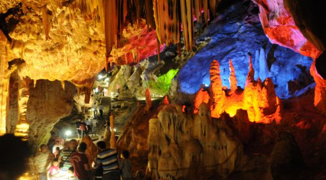

Turistik Yerler

TOPÇAM YAYLASI Tokat il merkezine 15.km ve 1600 metre yükseklikteki Topçam yaylası temiz havası ve gür ormanları ile olağanüstü bir güzelliğe sahiptir.Yazın yayla evlerinde kalan insanların sıcak konukseverliği misafirleri memnun etmektedir.
SELEMEN YAYLASI Tarih, kültür ve doğal zenginliğin bir arada en üst seviyeye ulaştığı yaylamızdır.1514 yılında çaldıran seferine çıkan Yavuz Sultan Selim, ordusu ile bu yaylada konaklamış ve Cuma namazını bu yaylada kılmıştır.O günden günümüze kadar ilkbahardan itibaren ilk kar düşene kadar her Cuma günü Selemen ‘de yayla pazarı kurulmaktadır.Kurulan pazarda hala mübadele usulü alışverişin yapılıyor olması, yörenin kültürel zenginliğini gösterir.
BATMANTAŞ YAYLASI İl merkezine 28 km uzaklıkta ve 1850 metre yükseklikteki Batmantaş Yaylası sık ve gür çam ormanları tertemiz yayla havası ve buz gibi suları ile yayla turizminde hizmet etmeyi beklemektedir.
AKBELEN ( BİZERİ) YAYLASI Tokat il merkezine 29 km uzaklıktadır.Çevrenin en büyük yaylasıdır.(1740 metre).Çim kayağına uygun geniş kırsal alanı, çam ve kayın ağaçlarından oluşan muhteşem manzaralı ormanlarla çevrilidir.
DUMANLI YAYLASI İl merkezine 70 km. uzaklıkta ve 2578 metre yükseklikteki Dumanlı yaylasında rengarenk yayla çiçeklerinin görüntüsü, insanın yaşam sevincini bir kat daha arttırmaktadır.Dumanlı yaylası zinciri çevresinde başta Çatak Yaylası olmak üzere 40 dan fazla yayla bulunmaktadır.
ÇAMİÇİ YAYLASI Tokat’ın Karadeniz’ e açılan dağları üzerinde bulunan Çamiçi yaylası yazın insanlara konaklama hizmeti vermektedir.Her yıl Niksar Belediyesince Çamiçi yayla şenlikleri burada düzenlenmektedir.Çamiçi yaylasında Turizm Bakanlığından yatırım belgeli tesis yanında nitelikli apart konaklama yerleri ve lokantalar yaz kış hizmet sunmaktadır.
ZİNAV GÖLÜ Reşadiye İlçesinin Yolüstü ( Meğedün) Köyüne 3 Km uzaklıktadır.Gölün suları tatlıdır.Göl bir dere ve küçük sularla beslenir.Ortalama 1.5 km2 alana sahiptir.Gideğeninden ( Gölyalağından) boşalan sular, Kelkit Çayı’na ulaşır.Kenarında bataklık yerler yoktur.Ortalama derinlik 10-15 m. Civarındadır.Etrafı korunmaya alınmış orman alanıdır.Gölde kızılkanat denilen çok lezzetli bir tatlı su balık türü yaşamaktadır.
KAZ GÖLÜ Tamamına yakını sazlıklarla kaplı olan Kaz Gölünün kıyısında akşam güneşinin batışını seyretmek yeterde artar bile .Saksağan, akleylek, angıt, alaca balıkçıl, akkuyruk, sallayan, karatavuk, küçük batağan gibi onlarca çeşit kuşu barındıran Kaz gölünde sazlar arasında ilkel sallarla gezinti yapmanın heyecanını yaşamak apayrı bir zevktir.Orman Bakanlığınca Kaz Gölü Yaban Hayatı Koruma Sahası olarak tefrik edilerek avlanma yasaklandıktan sonra kuş türleri artmıştır.
GÖLLÜ KÖY GÖLÜ Reşadiye ilçesinin aynı isimle anılan köyü sınırları içerisinde yer alan göl doğal bir güzelliğe sahiptir.
MESİRE YERLERİ
Gıj gıj tepesi:Tüm haşmetiyle Tokat’ın bir bölümünü kuşatan gıj gıj tepesi, özellikle sıcak havalarda Tokatlıların serinlemek için çıktıkları, çam kokularının buram buram yayıldığı, Tokat’ı adeta uçaktan seyrediyor havası veren olağanüstü güzellikte bir mesire yeridir.Gümenek:tarihi Komana Pontika yerleşim yeri üzerinde yer alır.Tokat’a 10 km .mesafededir.Tozanlı çayının etrafını çevreleyen asırlık ulu ağaçların altında serinleyerek piknik yapmanın zevki bambaşkadır.Özellikle hafta sonları Tokatlıların ilk uğrak yeridir.
Belediye Şehitler Parkı :Şehir merkezinde Yeşilırmak etrafında belediyece düzenlenmiş şehitler parkı, özellikle akşam saatlerinde Tokatlıların semaverde çay içme keyfini yaşadığı güzel bir mekandır.
Ayrıca :Topçam Tekmezar, Batmantaş Yaylası, Alan yaylası, Gözova Regülatörü, Gökçeyol Göleti, Almus Orman evleri, Almus Belediye Parkı, Çatak Yaylası, Niksar Çamiçi Yaylası, Ayvaz Parkı, Erbaa Düden Gölü, Reşadiye Zinav Gölü, Kurt Gölü, Selemen Yaylası, Zile-Şeyh Ahmet, Esvap Çayı, Başçiftlik Düden Yaylası, Sulusaray-Kaplıcalar, Artova Alçakgedik, Baraj bölgemizin mesire yerlerinin başında gelir.